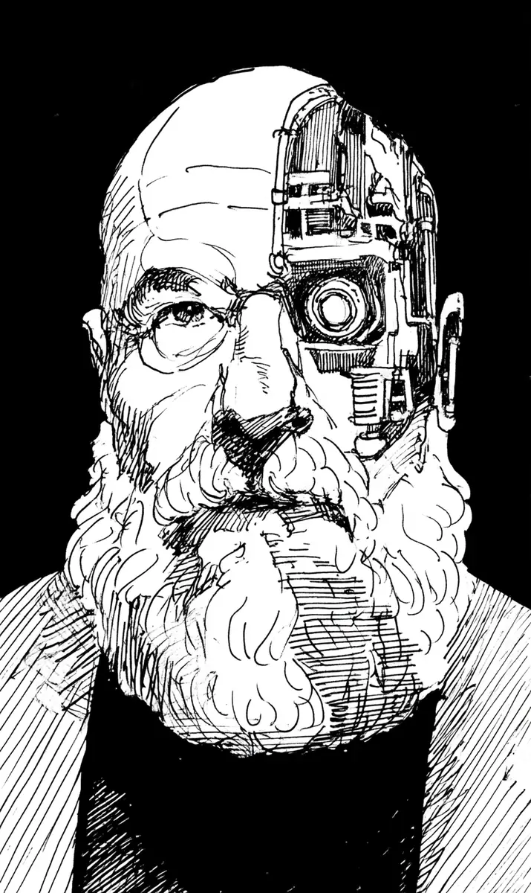

“만수 할아버지, 제 열쇠가 없어요!” 한 아저씨가 큰 소리로 말했다. 만수 할아버지는 천천히 고개를 들었다. 할아버지의 얼굴은 반은 사람이고, 반은 기계였다. 오른쪽 눈은 작은 카메라처럼 빛났다. 하지만 아저씨는 하나도 놀라지 않았다. 이 동네 사람들은 모두 할아버지의 눈을 알고 있었다. 그 기계 눈은 특별한 힘이 있었다. 바로 잃어버린 물건을 찾는 힘이었다.
[”Grandfather Mansu, my keys are gone!” a man shouted. Grandfather Mansu slowly raised his head. His face was half human and half machine. His right eye glowed like a little camera. But the man was not surprised at all. Everyone in this neighborhood knew about grandfather’s eye. That machine eye had a special power. It was the power to find lost things.]
할아버지는 기계 눈을 천천히 돌렸다. 눈에서 삐삐 소리가 났다. “열쇠는 냉장고 안에 있어요.” 정말 열쇠는 냉장고 안에 있었다. 아저씨는 웃으면서 집으로 갔다. 조금 후에 한 아주머니가 왔다. “할아버지, 제 안경을 못 찾겠어요.” 할아버지가 웃었다. “안경은 지금 아주머니 머리 위에 있어요.” 아주머니는 머리를 만졌다. 정말 안경이 거기에 있었다. 아주머니의 얼굴이 빨개졌다.
[Grandfather slowly turned his machine eye. A beep beep sound came from the eye. “The keys are in the refrigerator.” The keys really were in the refrigerator. The man went home laughing. A little later, a woman came. “Grandfather, I can’t find my glasses.” Grandfather smiled. “Your glasses are on your head right now.” The woman touched her head. They really were there. The woman’s face turned red.]
그때 작은 여자아이가 울면서 뛰어왔다. 아이의 이름은 수아였다. “할아버지! 우리 나비가 없어졌어요!” 나비는 수아의 고양이였다. “털이 하얗고, 아주 작아요. 아침부터 안 보여요.” 수아는 눈물을 흘렸다. 할아버지는 수아의 머리를 부드럽게 만졌다. “울지 마. 할아버지가 꼭 찾아 줄게.”
[Just then, a little girl came running and crying. The girl’s name was Sua. “Grandfather! Our Nabi is gone!” Nabi was Sua’s cat. “Her fur is white, and she is very small. I haven’t seen her since this morning.” Sua shed tears. Grandfather gently touched Sua’s head. “Don’t cry. Grandfather will surely find her for you.”]
할아버지는 기계 눈을 켰다. 눈이 윙윙 돌아갔다. 눈은 높은 나무 위를 봤다. 나비는 없었다. 눈은 지붕 위도 봤다. 거기에도 없었다. 눈은 의자 밑까지 봤다. 나비는 어디에도 없었다. 할아버지는 조금 걱정이 됐다. 기계 눈에서 기름이 한 방울 흘렀다. 꼭 땀 같았다.
[Grandfather turned on his machine eye. The eye whirred around. It looked up in the tall trees. Nabi was not there. It looked on the roofs too. She was not there either. It even looked under the chairs. Nabi was nowhere. Grandfather became a little worried. A drop of oil fell from the machine eye. It was just like sweat.]
그때 할아버지의 길고 하얀 수염이 움직였다. 수아가 눈을 크게 떴다. “할아버지, 수염이 움직여요!” 할아버지는 수염 속을 천천히 봤다. 작고 하얀 나비가 거기서 자고 있었다. 나비는 할아버지의 따뜻한 수염을 침대로 생각했다. “야옹.” 나비가 작게 울었다.
[Just then, grandfather’s long white beard moved. Sua opened her eyes wide. “Grandfather, your beard is moving!” Grandfather slowly looked inside his beard. Little white Nabi was sleeping in there. Nabi had thought grandfather’s warm beard was a bed. “Meow.” Nabi gave a small cry.]
수아도 웃고, 할아버지도 웃었다. “내 눈은 멀리 있는 것은 잘 찾아.” 할아버지가 말했다. “그런데 코앞에 있는 것은 잘 못 찾네.” 기계 눈이 부끄러운 듯이 삐 소리를 냈다. 수아는 나비를 꼭 안았다. “할아버지, 정말 고맙습니다!” “다음에는 나비를 잃어버리지 마.” 할아버지는 따뜻한 차도 한 잔 줬다.
[Sua laughed, and grandfather laughed too. “My eye finds faraway things well,” grandfather said. “But things right under my nose, it can’t find.” The machine eye gave a shy little beep. Sua hugged Nabi tightly. “Grandfather, thank you so much!” “Next time, don’t lose Nabi.” Grandfather even gave her a cup of warm tea.]
그날 이후, 나비는 가끔 할아버지에게 놀러 왔다. 그리고 할아버지의 수염 속에서 낮잠을 잤다. 할아버지는 다 알고 있었다. 하지만 그냥 모르는 척했다. 기계 눈도 못 본 척, 가만히 빛났다.
[After that day, Nabi sometimes came to visit grandfather. And she napped inside his beard. Grandfather knew everything. But he just pretended not to. The machine eye, too, pretended not to see, and quietly glowed.]